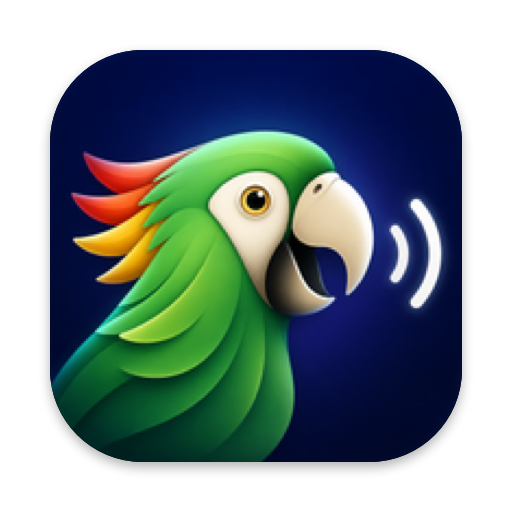

Parrot Free offline text-to-speech for Mac
Select text in any app, press ⌥ Esc, and hear it read aloud in a natural AI voice. Private, open source and no subscription.
Get Parrot on GitHubRead any text aloud on your Mac
Natural AI voices28 American and British voices from the Kokoro model, far more human than the built-in macOS voices.
Works in every appSafari, Chrome, PDFs in Preview, Mail, Notes, Word, Slack, VS Code and more.
100% offline and privateThe voice model runs on your Mac. Your text never leaves your computer.
Full controlPause, resume, skip a sentence, and change speed from 0.5× to 2.5×.
Instant startSpeech begins after the first sentence while the rest is generated.
Free and open sourceMIT-licensed. A free alternative to Speechify, NaturalReader and ElevenReader for reading selected text.
Install in one command
git clone https://github.com/brahimhamichan/parrot.git
cd parrot && ./install.shThen allow Parrot in System Settings → Privacy & Security → Accessibility. Requires macOS 14 Sonoma or later.
Frequently asked questions
How do I make my Mac read text aloud?
Install Parrot, select text in any app and press ⌥ Esc. Press it again to stop.
Is there a free text-to-speech app for Mac with natural voices?
Yes. Parrot is free and open source, and uses the Kokoro AI voice model.
Does it work offline?
Yes. Internet is only needed once, during install.
Is it better than macOS Speak Selection?
It uses the same idea (select text, press a shortcut) but with natural AI voices plus pause, skip and speed controls.
Is it a Speechify alternative?
For reading selected text aloud, yes: no subscription, and your text stays on your Mac.